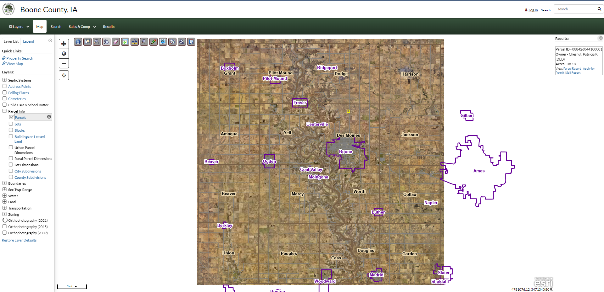
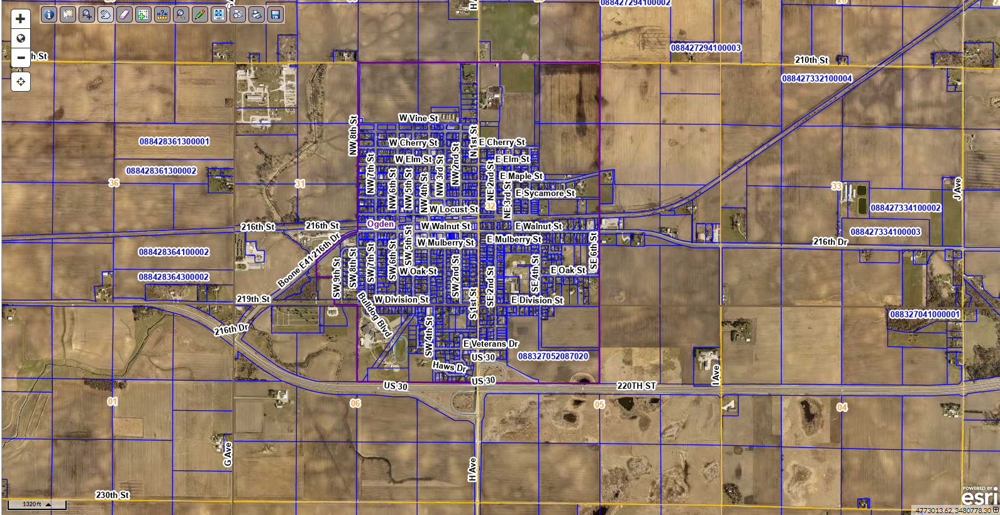
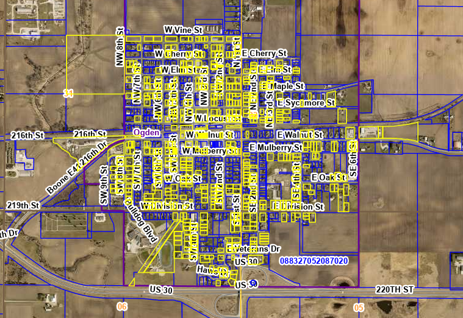
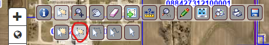
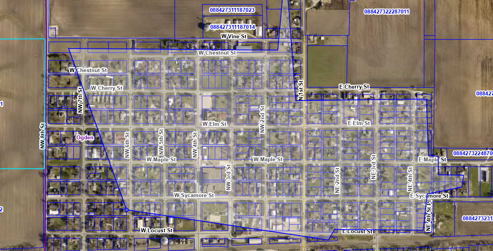
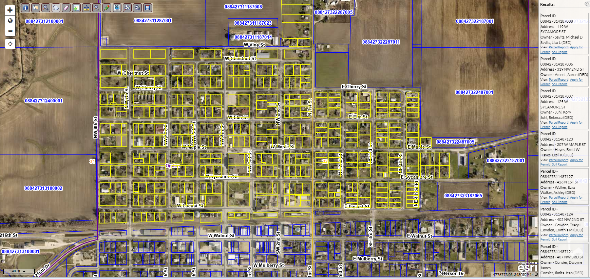
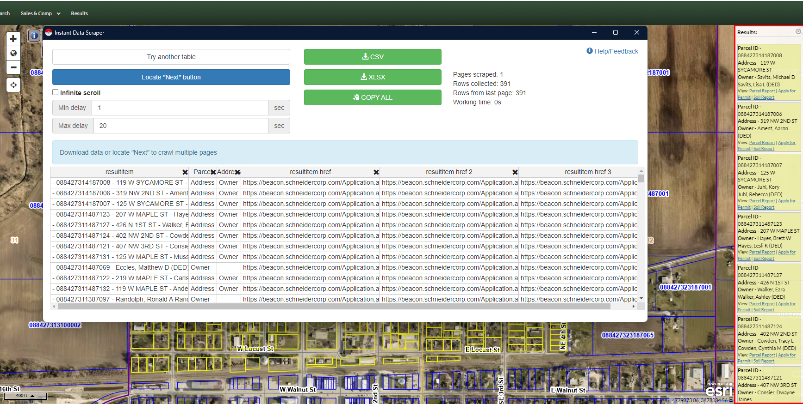
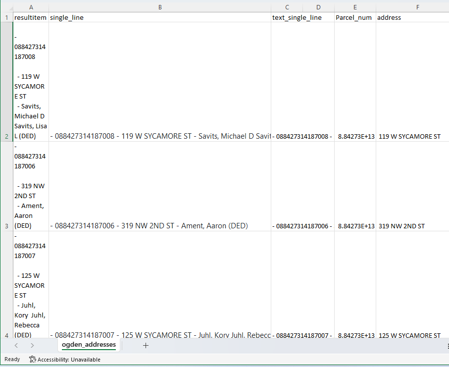
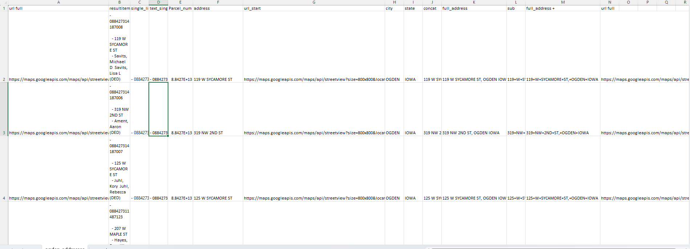
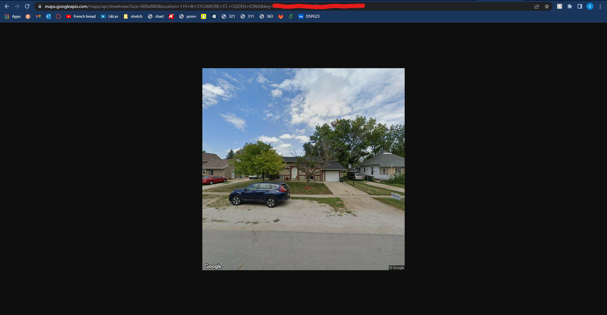

How to collect addresses, images, and evaluate those images using AI models
This will be a full guide on how to recreate what AI housing team has done this summer using Ogden IA as an example.
Address Collection and Cleaning
First we need to go to Beacon to try and collect a list of addresses. The following link will bring you to Boone County and you need to scroll in on Ogden (West/center). Beacon Map View
We found a tool called Instant Data Scraper that you need for this process. An alternative to this is badly needed as you will see soon, but this application worked for the time being when we had no prior web scraping experience yet. DSPG students for summer of 2024, I beg you to try and scrape Beacon with your own spider before using this tool to save yourself from the cleaning you have to do.
Below I display an image of the Beacon interface then an image zoomed in on Ogden.
 
Navigate to the buttons towards the top of the screen and find the cursor over a box. This is the select tool that we need to use for selecting properties. There is a limit of how many addresses you can grab at once so below is what it looks like if you try to grab every property at once:

Instead we need to click on this button and select the polygon version.

To avoid the problem of too many addresses I typically select four segments of the town and merge them after exporting to csv files. As you can see below I used the polygon tool to select all parcels north of 216th Street(the large road below my box). The polygon selector has multiple points you can set, just make sure each parcel you want is within the shaded area or on the line then double click to select all parcels.

Notice on the right hand side how all of the parcels you selected show up. This is where we want to scrape the information from. Open the instant data scraper tool from your extensions button (top right). Below you can see how the chrome extension automatically found the information to the right which now has a red marker around it. I deleted all of the columns in this interface except for resultitem because from our experience this holds the parcel number, address, and owner.


Go ahead and export to a csv. The file is automatically saved as beacon.csv so go ahead and rename this file to ogden_n_216_st.csv. This is a temporary name just so you can easily find your Ogden files and know that the first grab was north of this road that we chose. Repeat this process until you have grabbed all of the parcels you desire, you have to close the instant data scraper and open it again for each new grab. Some towns I could scrape in one go while some took four cuts to collect all the data.
Next we are simply merging the csv files. Choose one of the files to be the main one, then go csv by csv to copy and paste into the main csv file. You could make a script to do this for you but honestly it doesn’t take that long, a trick is when you press ctrl + shift + down arrow you can select the entire column. ctrl + down arrow will bring you to the bottom of the csv column in your main file. Leave out the top row that has resultitem. Also all of the boxes have - or #NAME? don’t worry yet there is more in these boxes they are just on newlines.
Rename the main file to ogden_addresses because this in this file we will clean the data then create address links. First in B2 place this function =TRIM(CLEAN(SUBSTITUTE(A2,CHAR(160),” “))). This will reformat the input text to be on one line without hidden characters. Usually your able to double click the bottom right of the cell and it will auto fill all the way down but most of these functions refuse to auto fill so you just need to grab the corner and drag to fill in B to be easily accessible text. Next copy all of the cells in column B and paste as text into column C.
Copy column C into column D. Select all of column D, navigate to the Data tab, then text to columns in data tools. Select delimited then press next, deselect tab then select other and enter - into the box then select next, then finish. This will separate the data by parcel number, address, and owner. I deleted the owner name due to it being unnecessary information.

Finally I noticed address needs to be trimmed so in a new column you can use the function =TRIM(A2) then paste the result as values back into the address column.
Creating Google API Links
What are the Google API Links? Here is an example of the beginning of an address from Grundy Center:
https://maps.googleapis.com/maps/api/streetview?size=800x800&location=303+I+AVE,+GRUNDY+CENTER+IOWA
this is followed by &key=(API Key). Pasting the entire link brings you to an image provided by Google street view if it exists. You could also use latitude and longitude coordinates instead of address but the image you get is not guaranteed to be a front image of the house. Google however, has a built in program to get the front of a house if you enter the address if it can find one.
We will continue to use the file from the previous section. First you need a url_start column to store the first half of the url which is always the same (https://maps.googleapis.com/maps/api/streetview?size=800x800&location=). So in columns G, H, I, I have the url in the previous sentence, City (Ogden), then State (IOWA). Next we need to concatenate the full address with =CONCAT(F2, “,”, H2, ” “, I2). F2 is the house address, H2 is city, and I2 is State which results in 119 W SYCAMORE ST, OGDEN IOWA for my first address. Copy this column into the next and paste as values. Do not forget to try double clicking the bottom right of the cell to auto fill before dragging.
In the next column use =SUBSTITUTE(K2, ” “,”+“) which will replace all the white space with + which is neccesary for the link. Again paste as values into the next column. Next =CONCAT(G2,M2) will combine what is my url_start column and my full_address_+ column to get the entire url needed to run through my Google API scraper.Finally we need to place the values of this last column I named url_full into the first column so it is easily accessible by the python script.

Now you can grab one of the links from the leftmost column and check that the link works. All I did was copy that part of the link into my browser, added &key=(API Key) and this was my result:
